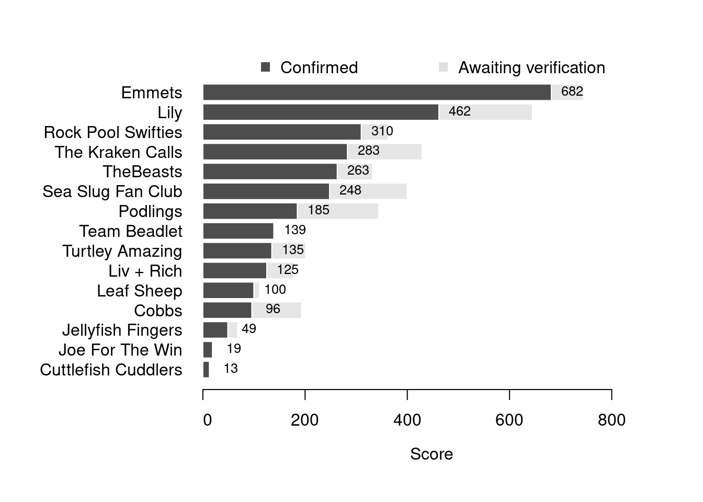

Content
You can view all the wildlife recorded at this event on iNaturalist.


| Records | 358 |
| Species | 76 |
| Verified species | 60 |
| Observers | 16 |
| Potential score | 1,686 |
| Confirmed score | 1,150 |
| Top verified species | Arcuatula senhousia |
| Top species rarity score | 81 |
| Registered participants | 22 |
| Children attending | 12 |
Congratulations to Emmets for taking the gold medal in this BioBlitz Battle! And well done to everyone for a great game and some fantastic wildlife finds.
| Team | Records | Potential Score | Confirmed Score |
|---|---|---|---|
| Emmets | 45 | 745 | 682 |
| Lily | 78 | 645 | 462 |
| Rock Pool Swifties | 31 | 362 | 310 |
| The Kraken Calls | 59 | 429 | 283 |
| TheBeasts | 33 | 332 | 263 |
| Sea Slug Fan Club | 20 | 400 | 248 |
| Podlings | 22 | 344 | 185 |
| Team Beadlet | 7 | 139 | 139 |
| Turtley Amazing | 15 | 201 | 135 |
| Liv + Rich | 16 | 178 | 125 |
| Leaf Sheep | 15 | 111 | 100 |
| Cobbs | 9 | 193 | 96 |
| Jellyfish Fingers | 5 | 68 | 49 |
| Joe For The Win | 2 | 19 | 19 |
| Cuttlefish Cuddlers | 1 | 13 | 13 |

| Participant | Records | Potential Score | Confirmed Score |
|---|---|---|---|
| emonaghan | 35 | 691 | 619 |
| lmw579 | 78 | 645 | 462 |
| snacksizedbelly | 31 | 362 | 310 |
| HilskiB44 | 59 | 429 | 283 |
| rosietap | 33 | 332 | 263 |
| Kitty Turner | 20 | 400 | 248 |
| jowann | 10 | 186 | 186 |
| One World | 22 | 344 | 185 |
| Zoe Caals | 7 | 139 | 139 |
| chrismhot | 15 | 201 | 135 |
| richn76 | 16 | 178 | 125 |
| Charlie Pearce | 15 | 111 | 100 |
| hazelc1957 | 9 | 193 | 96 |
| anna_and_grace | 5 | 68 | 49 |
| joebaker1 | 2 | 19 | 19 |
| Ian Creasey | 1 | 13 | 13 |
A total of 5 species have a verified rarity score of 41 or higher.


Community verified records only
Click any image to view the taxon on iNaturalist.
| Name | Rarity Score | |
|---|---|---|

|
Asian Date Mussel - Arcuatula senhousia | 81 |

|
Pacific brown-banded sea-spider - Ammothea hilgendorfi | 69 |

|
Fountain anemone - Sagartiogeton laceratus | 49 |

|
Atlantic Hairy Hermit Crab - Pagurus cuanensis | 42 |

|
Pisa tetraodon | 41 |

|
Northern Quahog - Mercenaria mercenaria | 40 |

|
Pheasant-shell - Tricolia | 40 |

|
Hooded Shrimp - Athanas nitescens | 33 |

|
Stalked Sea Squirt - Styela clava | 31 |

|
Sulphur Boring Sponge - Cliona celata | 29 |

|
Keyhole Bryozoan - Cryptosula pallasiana | 28 |

|
rusty rock - Hildenbrandia rubra | 28 |

|
Anomia ephippium | 27 |

|
Baked Bean Ascidian - Dendrodoa grossularia | 27 |

|
Common piddock - Pholas dactylus | 26 |

|
Hairy Crab - Pilumnus hirtellus | 26 |

|
Bristly Mail-shell - Acanthochitona crinita | 25 |

|
Devil’s Tongue Weed - Grateloupia turuturu | 25 |

|
Wrinkled Barnacle - Balanus crenatus | 23 |

|
Cylista | 20 |

|
Large Necklace Shell - Euspira catena | 18 |

|
Ruditapes | 18 |

|
Daisy Anemone - Cereus pedunculatus | 16 |

|
Long-clawed Porcelain Crab - Pisidia longicornis | 16 |

|
Mimachlamys varia varia | 15 |

|
European Sting Winkle - Ocenebra erinaceus | 15 |

|
Pullet Carpet Shell - Venerupis corrugata | 15 |

|
Beaked Barnacle - Austrominius modestus | 14 |

|
Sand Mason Worm - Lanice conchilega | 14 |

|
Pepper Dulse - Osmundea pinnatifida | 14 |

|
Great Scallop - Pecten maximus | 14 |

|
Dwarf Brittle Star - Amphipholis squamata | 13 |

|
Netted Dogwhelk - Tritia reticulata | 13 |

|
Dahlia Anemone - Urticina felina | 13 |

|
European Painted Top Shell - Calliostoma zizyphinum | 12 |

|
Sugar Kelp - Saccharina latissima | 12 |

|
Common Atlantic Slippersnail - Crepidula fornicata | 11 |

|
Pacific Oyster - Magallana gigas | 11 |

|
European Flat Oyster - Ostrea edulis | 11 |

|
Irish Moss - Chondrus crispus | 10 |

|
Grey Mail-shell - Lepidochitona cinerea | 10 |

|
Common Sea Star - Asterias rubens | 9 |

|
Common Coralline - Corallina officinalis | 9 |

|
Blue Mussel - Mytilus edulis | 9 |

|
Velvet Swimming Crab - Necora puber | 9 |

|
Glass Shrimps - Palaemon | 9 |

|
Serpulid Tubeworms - Serpulidae | 9 |

|
Grooved Razor Shell - Solenoidea | 9 |

|
Purple Topshell - Steromphala umbilicalis | 9 |

|
Atlantic Beadlet Anemone - Actinia equina | 8 |

|
snakelocks anemone - Anemonia viridis | 8 |

|
sea beet - Beta vulgaris maritima | 8 |

|
Common Whelk - Buccinum undatum | 8 |

|
bladder wrack - Fucus vesiculosus | 8 |

|
Common Periwinkle - Littorina littorea | 8 |

|
Atlantic Dogwhelk - Nucella lapillus | 8 |

|
European Green Crab - Carcinus maenas | 7 |

|
Eurasian Oystercatcher - Haematopus ostralegus | 7 |

|
Patella | 7 |

|
Sea Lettuces - Ulva | 6 |